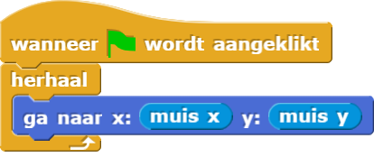

Sprite Die de Muis Volgt
In deze les ga je met twee sprites programmeren. Één sprite gaat je muis volgen. De ander gaat de eerste sprite achtervolgen. Wanneer ze elkaar aanraken, zullen ze een praatje houden met elkaar.
Op deze pagina, ga je de eerste sprite programmeren zodat hij je muis volgt en de tweede sprite programmeren zodat hij in de richting van de eerste wijst, als voorbereiding op het achtervolgen.
-
"H1L5-SpriteAchtervolg"

-
 and rapporteren de locatie van de muis op het speelveld. Ze zijn te vinden in het Waarnemen-palet.Lees en denk na over het script voordat je het bouwt. Wat verwacht je dat het doet?
and rapporteren de locatie van de muis op het speelveld. Ze zijn te vinden in het Waarnemen-palet.Lees en denk na over het script voordat je het bouwt. Wat verwacht je dat het doet?
 -
Bouw nu het script en voer het uit. Beweeg je muis over het speelveld terwijl het programma bezig
is.
Het blok aan de bovenkant van het script heet een hoedblok. De vorm benadrukt dat het alleen aan het begin van een script kan worden gebruikt. Hoedblokken zeggen niet wat het script moet doen; ze zeggen wanneer het script iets moet doen. Hoed blokken zeggen door middel van welke gebeurtenis het script moet beginnen. In dit geval start het script wanneer er op de groene vlag geklikt wordt.
Om dit script te stoppen , klik je op de knop met het rode stop teken:

 Werkt het
programma zoals je had
verwacht?
Werkt het
programma zoals je had
verwacht?
-
Maak een tweede sprite door te klikken op de
 knop, onder het
speelveld.
knop, onder het
speelveld.
Gebruik dan hetricht naarblok om hem naar Sprite te richten. De animatie hieronder laat zien hoe het moet.
-
Pas je script aan zodat Sprite(2) het wijzen naar Sprite
herhaalt, zodra er op de groene vlag geklikt is.
-
Klik op de
 en controleer of je script doet wat het zou
moeten doen:
en controleer of je script doet wat het zou
moeten doen:
- Sprite volgt altijd je muis, wanneer je je muis beweegt.
- Sprite(2) blijft op zijn plek, maar wijst altijd naar Sprite.
wanneerwordt aangeklikt, dus
allebei de scripts zijn bezig wanneer de